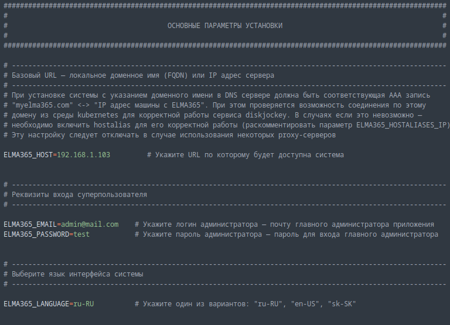
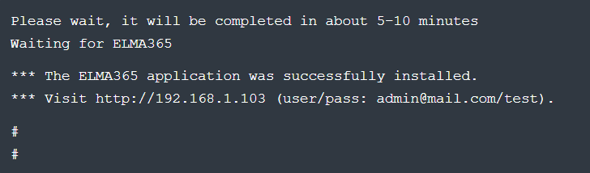
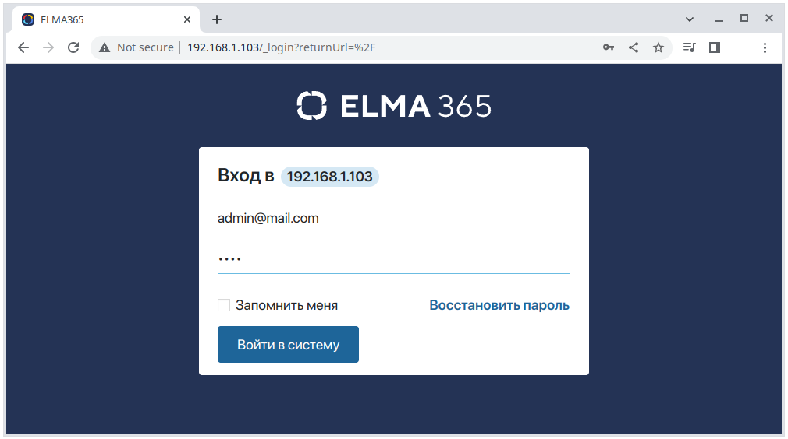

начало внимание
С 30.05.2024 заблокирован доступ из РФ к Docker Hub. Ознакомьтесь с официальным заявлением компании.
конец внимание
ELMA365 On-Premises редакции Standard можно установить в Kubernetes-in-Docker (KinD). Данный вариант установки наиболее прост и позволяет запускать локальный кластер Kubernetes с использованием узла Docker контейнера.
Установка состоит из трёх этапов:
- Установка Docker на вашу операционную систему.
- Скачивание скрипта установки и заполнение конфигурационного файла.
- Запуск скрипта установки.
Перед началом установки ознакомьтесь с системными требованиями ELMA365 On-Premises Standard.
Шаг 1: Установка Docker
Установите Docker для вашей операционной системы.
начало внимание
Обратите внимание, KinD не поддерживает создание Kubernetes-кластера с Cgroups v2. Подробнее о возможных ошибках читайте в документации.
конец внимание
Шаг 2: Скачивание скрипта установки и заполнение конфигурационного файла
При первом запуске скрипт установки создаст файл конфигурации с наименованием config-elma365.txt в каталоге, откуда он был запущен.
- Скачайте и запустите скрипт установки ELMA365 для создания конфигурационного файла, выполнив следующую команду:
sudo curl -fsSL -o elma365-docker.sh https://dl.elma365.com/onPremise/latest/elma365-docker-latest && \
sudo chmod +x elma365-docker.sh && \
sudo ./elma365-docker.sh
Адреса для загрузки других версий ELMA365 перечислены в статье «Ссылки для скачивания дистрибутивов ELMA365».
начало внимание
Для создания нового стартового (default) файла конфигурации переименуйте существующий файл конфигурации config-elma365.txt и запустите скрипт установки с ключом --new-config.
конец внимание
- Внесите изменения в подготовленный скриптом установки конфигурационный файл
config-elma365.txt.
- Для быстрого старта приложения ELMA365 Standard раскомментируйте и заполните необходимые переменные.
Заполнение основных параметров в конфигурационном файле config-elma365.txt может выглядеть следующим образом:

Где:
ELMA365_HOST=192.168.1.103— IP-адрес хостовой машины, по которому будет доступно приложение ELMA365 Standard. Подробнее о создании домена (FQDN) читайте в «Изменение параметров ELMA365 Standard»;ELMA365_EMAIL=admin@mail.com— адрес электронной почты администратора;ELMA365_PASSWORD=test— пароль администратора;ELMA365_LANGUAGE=ru-RU— язык установленной системы.
начало внимание
Если Docker установлен через Snap, в файле конфигурации необходимо раскомментировать и изменить пути до папок/каталогов для параметров: ELMA365_INSTALL_DIR, ELMA365_BACKUP_DIR, например, на:
ELMA365_INSTALL_DIR=/mnt/elma365/docker;ELMA365_BACKUP_DIR=/mnt/elma365/backup.
конец внимание
Заполнение переменных подключения к proxy-серверу
Чтобы использовать ваш proxy-сервер для установки и работы ELMA365 Standard, раскомментируйте и заполните переменные секции Пример для # ------------------------------------------------------------- # -------------------------------------------------------------
где:
Убедитесь, что в переменных |
Подробнее о параметрах конфигурационного файла config-elma365.txt читайте в статье «Изменение параметров ELMA365 Standard».
Шаг 3: Запуск скрипта установки ELMA365 Standard
Объём загружаемых файлов во время установки ELMA365 Standard составляет 4-5 ГБ, время установки занимает 10-15 минут.
- Запустите загруженный ранее скрипт установки с помощью команды:
sudo ./elma365-docker.sh
По окончании установки в скрипте отобразится сообщение об успешной установке приложения ELMA365 Standard.

- Запустите браузер и откройте страницу входа в приложение ELMA365 Standard по адресу
http://ELMA365_HOST. ПараметрELMA365_HOSTбыл указан в файле конфигурацииconfig-elma365.txtна шаге скачивания скрипта установки и заполнения конфигурационного файла.
В представленном примере используется следующий адрес страницы входа в приложение ELMA365 Standard: http://192.168.1.103

- В качестве логина и пароля укажите адрес электронной почты администратора и пароль, который использовался в файле конфигурации
config-elma365.txtв параметрахELMA365_EMAILиELMA365_PASSWORD.
В приведённом примере используются:
- Логин — admin@mail.com;
- Пароль — test.
- Нажмите кнопку Войти в систему.
Откроется окно активации системы ELMA365.
- Активируйте систему. Подробнее об этом читайте в статье «Активация On-Premises».
Установка приложения ELMA365 редакции Standard успешно закончена.
Начало внимание
Сохраните файл config-elma365.txt для последующих обновлений.
Конец внимание